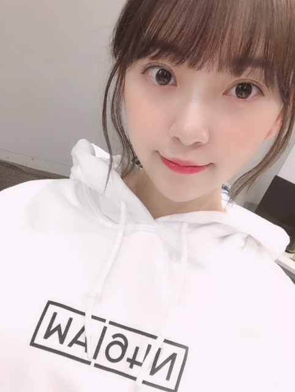

2019/0123Wed今日のこと
今日は
17:30〜のぎおびshowroom配信
23:45〜文化放送レコメンです✨✨
#レコメン女心 つぶやいてね
よろしくです o(^-^)o
だいたいぜんぶ展のパーカー☺︎

Lサイズでだぼっと着ました。
白は今は売り切れみたいですが
黒を着たらあすかとお揃いですよ〜
ぜひともぜひとも
逃げ水の個人tシャツもかわいいので
要checkです☺︎
個人的にはバレッタのタオルがすきです

乃木中見てくださいましたか？
見事に真っ黒。笑
羽子板をやるのは小さい頃以来で
楽しかったです✨


眠れる森の美女のオーロラ姫が
私の中でシンデレラと並ぶくらいに
リスペクトしているディズニープリンセスで、
オーロラ姫風の
黒カチューシャ×巻き下ろしは
最近のお気に入りへアです☺︎
フランスのユッセ城にいつか行きたいな〜って
思います
お姫様は女の子の永遠の憧れだし
いつか白馬の王子様が現れると夢見てます...
でもカメラを向けられると変顔をするあたり
まだまだですな...
ひよこ
では。
2019/01/23 16:12
コメント(354)
すいませんコメント遅くなりました、白馬の王子様です。
未央奈❤️❤️
そのパーカー絶対ほしい！
行ったら買うね！無いかもしれないけど…。
お揃いだね！笑
ザンビ、めっちゃ楽しみ！！
録画して寝ます～
おやすみおな♪
そのパーカー絶対ほしい！
行ったら買うね！無いかもしれないけど…。
お揃いだね！笑
ザンビ、めっちゃ楽しみ！！
録画して寝ます～
おやすみおな♪
こんばんは。
ブログ更新、ありがとう。
『乃木中 新春SP』観ましたよ。
みんな、体張ってて楽しかったです。
写真をみていても思いますけど、この柄（レトロモダン調？）の振袖に、高い位置で結んだツインテール、墨を塗られた顔と、まるで大正時代のおてんば娘みたいですね。
今日のSHOWROOMも観ました。
もう花粉症がはじまっているのですね。まだ雪が降るような寒さなのに。お大事に。
今年の抱負の書き初め、「前向き」になるのは、大切なことでしょうね。
ポニーテールも、まぶたがうるうると光るのも、イヤリングも可愛かったです。
オーロラ姫の話は、さすが女の子ですね。
それでは『レコメン！』聴いて『ザンビ』観ます。
ブログ更新、ありがとう。
『乃木中 新春SP』観ましたよ。
みんな、体張ってて楽しかったです。
写真をみていても思いますけど、この柄（レトロモダン調？）の振袖に、高い位置で結んだツインテール、墨を塗られた顔と、まるで大正時代のおてんば娘みたいですね。
今日のSHOWROOMも観ました。
もう花粉症がはじまっているのですね。まだ雪が降るような寒さなのに。お大事に。
今年の抱負の書き初め、「前向き」になるのは、大切なことでしょうね。
ポニーテールも、まぶたがうるうると光るのも、イヤリングも可愛かったです。
オーロラ姫の話は、さすが女の子ですね。
それでは『レコメン！』聴いて『ザンビ』観ます。
みおな！
2/16の個握いくよ〜初めてだからめちゃくちゃ楽しみでもうソワソワしてます笑笑
お洒落していこ
2/16の個握いくよ〜初めてだからめちゃくちゃ楽しみでもうソワソワしてます笑笑
お洒落していこ
乃木中すっごく面白かったです
ツインテール似合ってたのでまたしてくれると嬉しいです
ツインテール似合ってたのでまたしてくれると嬉しいです
ブログ更新ありがとう
どの未央奈もかわいい
どの未央奈もかわいい
白パーカー欲しかった
こんばんは。ブログ更新ありがとうございます。
本日も可愛い写真いっぱいあざーす！！最初の写真お気に入りです。パーカーのデザインもかっこいいですね。
乃木中見ました！！墨の顔ってレアですよね。（笑）
お姫様願望っていくつになっても女性にはありますよね。男子だと英雄願望になるのかな。かっこいい／可愛いの憧れって夢の一種かな？とも思います。
ではまた。
本日も可愛い写真いっぱいあざーす！！最初の写真お気に入りです。パーカーのデザインもかっこいいですね。
乃木中見ました！！墨の顔ってレアですよね。（笑）
お姫様願望っていくつになっても女性にはありますよね。男子だと英雄願望になるのかな。かっこいい／可愛いの憧れって夢の一種かな？とも思います。
ではまた。
個握ありがとうございました。
次もよろしく！！！
いつもかわいいです(*≧з≦)
次もよろしく！！！
いつもかわいいです(*≧з≦)
のぎおびSHOROOM♡堀殿の回観ました⊂(ο･㉨･ο）⊃”くまﾃﾞｽ…
ポニテ堀殿めちゃかわｳﾋｮﾋｮﾋｮ(o_ _)o ﾄﾞﾃｯ♡岐阜県♡つむじ♡ザンビ♡書初め♡前向きトークありがとうございますロンo(^-^o)(o^-^)oロンo(^-^o)(o^-^)oロン
ポニテ堀殿めちゃかわｳﾋｮﾋｮﾋｮ(o_ _)o ﾄﾞﾃｯ♡岐阜県♡つむじ♡ザンビ♡書初め♡前向きトークありがとうございますロンo(^-^o)(o^-^)oロンo(^-^o)(o^-^)oロン
showroom見ましたよ～。
岐阜は仕事でもたまに行きますが、良い街ですよね。
移動手段が少ないかなっていうイメージがあったんですが、バスが発達していて、便利だということに最近気づきました。
岐阜はスケールが大きくて、非常に可能性を秘めたところだと思います。
かつて、首都機能移転候補地にもなっていた理由も分かりますね。
凄い所が沢山あっても、それをぐいぐい推してこないのも、上品さの現れで、どっしり構えて地に足ついてるというか、おおらかというか、そんなゆったりした感じの空気感も好きです。笑
やはり掘ちゃんのような天才を生んだだけのことはありますね。笑
岐阜は仕事でもたまに行きますが、良い街ですよね。
移動手段が少ないかなっていうイメージがあったんですが、バスが発達していて、便利だということに最近気づきました。
岐阜はスケールが大きくて、非常に可能性を秘めたところだと思います。
かつて、首都機能移転候補地にもなっていた理由も分かりますね。
凄い所が沢山あっても、それをぐいぐい推してこないのも、上品さの現れで、どっしり構えて地に足ついてるというか、おおらかというか、そんなゆったりした感じの空気感も好きです。笑
やはり掘ちゃんのような天才を生んだだけのことはありますね。笑
堀ちゃん〜ブログ更新ありがとう！
今日は堀ちゃんずくしで楽しい日でした！嬉しい〜
だいたい全部展、地方だけどいつかは行きたいと思ってるんだ〜、その白パーカーはデザインも好きだけど堀ちゃんが着てたから是非とも手に入れたい！再販されないかなぁ…
いつもいつも堀ちゃんには感謝しかありません。
堀ちゃんの頑張りを少しでも汲みとれるようなファンのひとかけらになれてたらいいな
今日は堀ちゃんずくしで楽しい日でした！嬉しい〜
だいたい全部展、地方だけどいつかは行きたいと思ってるんだ〜、その白パーカーはデザインも好きだけど堀ちゃんが着てたから是非とも手に入れたい！再販されないかなぁ…
いつもいつも堀ちゃんには感謝しかありません。
堀ちゃんの頑張りを少しでも汲みとれるようなファンのひとかけらになれてたらいいな
ひよこみおな可愛いです
癒し〜
未央奈～ こんにちは
とっても充実した１日、本当におつかれさまでした。
「私の働き方」ももちろん見ましたよ。「理想の女性として挙げさせたい？」に始まり、心臓「ドクドク」とか「心臓今あふれています」？‥‥、また「堀語録」が誕生、思わず笑ってしまいました。
そして、「のぎおぎSHOWROOM」、これまたおつかれさまでした。こったんからの質問に答える形での「岐阜愛」、伝わってきましたよ。そして隣県・でんちゃんへの熱い思い、こちらも伝わってきました。
そして夜は、生放送の「レコメン」、「のぎおび」で話題になったに「３年A組ごっこ」、のりさんとの絶妙のやりとりおもしろい話、最高でした。
そしていよいよ待望のテレビドラマ「サンビ」の開始。これほどたっぷり予告していただき、楽しみにしていたのに、な、なんと名古屋地区は別番組。残念でなりません。仕方ありません。あとから何とかして見〜ます。
というわけで、実に濃い一日、本当におつかれさまでした。
とっても充実した１日、本当におつかれさまでした。
「私の働き方」ももちろん見ましたよ。「理想の女性として挙げさせたい？」に始まり、心臓「ドクドク」とか「心臓今あふれています」？‥‥、また「堀語録」が誕生、思わず笑ってしまいました。
そして、「のぎおぎSHOWROOM」、これまたおつかれさまでした。こったんからの質問に答える形での「岐阜愛」、伝わってきましたよ。そして隣県・でんちゃんへの熱い思い、こちらも伝わってきました。
そして夜は、生放送の「レコメン」、「のぎおび」で話題になったに「３年A組ごっこ」、のりさんとの絶妙のやりとりおもしろい話、最高でした。
そしていよいよ待望のテレビドラマ「サンビ」の開始。これほどたっぷり予告していただき、楽しみにしていたのに、な、なんと名古屋地区は別番組。残念でなりません。仕方ありません。あとから何とかして見〜ます。
というわけで、実に濃い一日、本当におつかれさまでした。
ほんっっっとかわいい
未央奈が最近韓国の女の子に見えます笑
そしてそしてね、
今週の土日高校の推薦入試なのです(;_;)
もう不安で不安でおかしくなりそう
でも頑張ってくるから！！
応援しててください
未央奈が最近韓国の女の子に見えます笑
そしてそしてね、
今週の土日高校の推薦入試なのです(;_;)
もう不安で不安でおかしくなりそう
でも頑張ってくるから！！
応援しててください
かわいい➰
今日は未央奈ちゃんばっかりの1日だったなぁ〜
未央奈ちゃん、白過ぎるからディズニーのキャラみたい（笑）
パーカーは一回りサイズ大きいのを着ている女の子、いいと思う(^^)
未央奈ちゃん、白過ぎるからディズニーのキャラみたい（笑）
パーカーは一回りサイズ大きいのを着ている女の子、いいと思う(^^)
堀さん、堀さん。
のぎー。
レコメンお疲れ様でしたー。
今日は、直接聞けなかったので、明日の通勤しながら、タイムフリーで聞きまーす。
お邪魔しましたー。
また、コメントしまーす。
のぎー。
レコメンお疲れ様でしたー。
今日は、直接聞けなかったので、明日の通勤しながら、タイムフリーで聞きまーす。
お邪魔しましたー。
また、コメントしまーす。
ブログ更新ありがとう！
showroom見たよ、今日の未央奈も可愛かった(*^^*)
岐阜のPRありがとう、自然豊かで空気新鮮で住みやすい街だね、飛騨、郡上、下呂、恵那、岐阜の長良川鵜飼い、金華山オススメ！
同郷で嬉しいよ(^-^)
これからも体調に気をつけて頑張ってね、活躍応援してます！
工事中スペシャル面白かった！
showroom見たよ、今日の未央奈も可愛かった(*^^*)
岐阜のPRありがとう、自然豊かで空気新鮮で住みやすい街だね、飛騨、郡上、下呂、恵那、岐阜の長良川鵜飼い、金華山オススメ！
同郷で嬉しいよ(^-^)
これからも体調に気をつけて頑張ってね、活躍応援してます！
工事中スペシャル面白かった！
・・・撮影、よく耐えましたなぁ。
僕ならザンビ村からソッコー逃走していただろう(￣ロ￣ll)
僕ならザンビ村からソッコー逃走していただろう(￣ロ￣ll)
堀さん、おはようございます。
『のぎおび』『レコメン』『ザンビ』と、昨日もたっぷり乃木充な生活を送ることができて、僕らは幸せです。
乃木坂46だいたい全部展のパーカーはすてきだなあ。白も黒もどちらも欲しい！
『乃木坂工事中』新春ゲーム大会は二週にわたって盛り上がりました。羽根つき大会もしくじった人には本格的に顔に墨塗って（ふふ）。一生落ちない墨を落とす薬品が早くできあがるといいですね（笑）。
ではまたコメントします。今日もよき日でありますように。
さらばだ、また会おう！（気球に乗って去りぬ〜）
『のぎおび』『レコメン』『ザンビ』と、昨日もたっぷり乃木充な生活を送ることができて、僕らは幸せです。
乃木坂46だいたい全部展のパーカーはすてきだなあ。白も黒もどちらも欲しい！
『乃木坂工事中』新春ゲーム大会は二週にわたって盛り上がりました。羽根つき大会もしくじった人には本格的に顔に墨塗って（ふふ）。一生落ちない墨を落とす薬品が早くできあがるといいですね（笑）。
ではまたコメントします。今日もよき日でありますように。
さらばだ、また会おう！（気球に乗って去りぬ〜）
未央奈ちゃんおはようございます‼ありがとうございます！楽しみにしてます！頑張ります‼今日もお仕事頑張って下さい！気を付けて下さい！
未央ちゃん
ブログ更新ありがとう
パーカかわいいね
乃木坂工事中
振り袖かわいいし
ツインテールも
かわいいね
真っ黒になっちゃつたけど
かわいい(笑)
髪も伸びてきて
イイ感じ
体調気をつけて
お仕事頑張ってね
ブログ更新ありがとう
パーカかわいいね
乃木坂工事中
振り袖かわいいし
ツインテールも
かわいいね
真っ黒になっちゃつたけど
かわいい(笑)
髪も伸びてきて
イイ感じ
体調気をつけて
お仕事頑張ってね
未央奈ちゃん更新ありがとー！
昨日は未央奈デーだったね！
showroomにレコメン、幸せでした(^_^)
オーロラ姫風、めっちゃ似合ってる！！
可愛い！姫にメロメロです(^o^)
ではでは
今日も素敵な１日になりますよーに。
昨日は未央奈デーだったね！
showroomにレコメン、幸せでした(^_^)
オーロラ姫風、めっちゃ似合ってる！！
可愛い！姫にメロメロです(^o^)
ではでは
今日も素敵な１日になりますよーに。
未央奈おはよう
昨日はのぎおび、レコメン、ザンビで未央奈をたくさん見れたから幸せだったよ。
のぎおびとレコメンは洋服を変えたんだね。
のぎおびで着たいた洋服は握手会で未央奈が着ていて「オシャレだな～」って思った洋服だよ。
レコメンで着ていた洋服は、ザンビの制服が紫だから紫の洋服にしたのかな？
どちらも未央奈に似合っていたし、可愛かったよ
ザンビは怖いな～って思ったシーンもあったけど(俺は怖いのが苦手で )「この先、どうなるだろう？」っていうドキドキ感がいいよね。
)「この先、どうなるだろう？」っていうドキドキ感がいいよね。
次週も楽しみだよ
ゴロ～
昨日はのぎおび、レコメン、ザンビで未央奈をたくさん見れたから幸せだったよ。
のぎおびとレコメンは洋服を変えたんだね。
のぎおびで着たいた洋服は握手会で未央奈が着ていて「オシャレだな～」って思った洋服だよ。
レコメンで着ていた洋服は、ザンビの制服が紫だから紫の洋服にしたのかな？
どちらも未央奈に似合っていたし、可愛かったよ
ザンビは怖いな～って思ったシーンもあったけど(俺は怖いのが苦手で
次週も楽しみだよ
ゴロ～
おはようございます‼︎
ブログ更新、ありがとうございます♪
乃木坂工事中新春スペシャル、もちろん観ましたよ‼︎
めっちゃ面白かった♪
グズグズの羽子板対決は、それはそれでいい勝負になっていて、笑っちゃいました♪
途中まで綺麗なお顔だったのに、惜しかったですね…‼︎
そうそう、かるた対決もとても良かった♪
未央奈節炸裂って感じでしたね‼︎
ハスキーボイスは、治ったのかな？
…って、収録は昨年か(笑)。
それはそれで趣のある声で良かったけど、何より健康が一番ですからね。
インフルエンザも流行っているようだし、くれぐれも体調には気をつけて…‼︎
あ、昨日のザンビも観ましたよ♪
思ったより本格ホラーでびっくりしました(笑)。
ホラー好きの未央奈には嬉しい限りですね‼︎
さて、台北アリーナでのライブ、バースデーライブと、いろいろと準備に追われて大変な日々を過ごしていると思いますが、体調に気をつけて頑張ってください‼︎
応援してます♪
ではでは、また。
今日も未央奈にとっていい1日になりますように♪
ブログ更新、ありがとうございます♪
乃木坂工事中新春スペシャル、もちろん観ましたよ‼︎
めっちゃ面白かった♪
グズグズの羽子板対決は、それはそれでいい勝負になっていて、笑っちゃいました♪
途中まで綺麗なお顔だったのに、惜しかったですね…‼︎
そうそう、かるた対決もとても良かった♪
未央奈節炸裂って感じでしたね‼︎
ハスキーボイスは、治ったのかな？
…って、収録は昨年か(笑)。
それはそれで趣のある声で良かったけど、何より健康が一番ですからね。
インフルエンザも流行っているようだし、くれぐれも体調には気をつけて…‼︎
あ、昨日のザンビも観ましたよ♪
思ったより本格ホラーでびっくりしました(笑)。
ホラー好きの未央奈には嬉しい限りですね‼︎
さて、台北アリーナでのライブ、バースデーライブと、いろいろと準備に追われて大変な日々を過ごしていると思いますが、体調に気をつけて頑張ってください‼︎
応援してます♪
ではでは、また。
今日も未央奈にとっていい1日になりますように♪
未央奈、今日も一日お疲れさま。
「だいたいぜんぶ展に行ってきたよー」って話し、握手会でするのをすっかり忘れてました。気づいたら片思いのジャケット写真がパネルとして展示してあったり、裸足でsummerの自撮り写真があったり。
一番印象的だったのは、衣装が展示されていたエリアでした。毎シングルごとの制服や、楽曲衣装やライブ衣装。一つ一つを見て「あの時の未央奈はこんなことがあったな」って思い出すことができました。
その当時のことを思い出せる空間で、あそこは一生いられる場所でした。。。
グッズも買いました。バレッタのポストカードと、誕生日が書かれたキーホルダー。たぶん、もう一度行くので、そこでじっくり見て思い入れのあるものを買おうと思いますm(_ _)m
ディズニーに登場するお姫様は、悲しみを背負いながらも、自分の意思をしっかりと持ったキャラクターが多いイメージ。。個人的にはアリエルと、ジャスミンが好きです…。というより、「リトル・マーメイド」と「アラジン」の話しが好きです。。
「シュガー・ラッシュ:オンライン」では、この二人もそうですが、どのお姫様もお茶目で、愉快で、お姫様じゃない一面も見せていて面白かったです笑
女性がお姫様に憧れるのは、永遠の夢な気がします。儚くて、か弱くて。でも逞しく成長して、誰かを守れる人になって、幸せになることを願う。
お姫様である完璧さは無くても、不完全でありのままの姿のほうが、その人らしさ、人間らしさがあって僕は素敵だと思います。人間、支え合って生きていくことしかできませんから。。。
未央奈にも、きっと素敵な人が現れるはずです。
変顔をしたら、変顔で返してくれてお互い笑いあって過ごせる人とか。それくらいがちょうどいいと思います。
じゃあ、最後に。
体調管理には気をつけて。
台湾ライブ、楽しんできてくださいね。
ではでは、ねこでした。
だいたい全部展行くねー
白いパーカー欲しかったなー
早く行けばよかった
白いパーカー欲しかったなー
早く行けばよかった
乃木中みおなちゃん可愛かったぁあ！
だいたいぜんぶ行きたいなー(^∇^)
ブログ更新ありがとう〜！ブログを更新してくれる度に未央奈フォルダがどんどん潤っていきます…本当に可愛い…♡
だいたいぜんぶ展、5月までに東京遠征することがあれば行こうと思っていたのに、グッズがどんどん売り切れていて悲しいです(;_;)逃げ水のTシャツとバレッタのタオル残っていたらいいな〜
ユッセ城って眠れる森の美女の舞台なんですね！検索してみたら可愛い写真が沢山ヒットして、フランスに行ってみたくなりました︎☺︎
カチューシャに巻き下ろしヘア本当に似合っていて可愛いです♡プリンセスみたい！
乃木中の高めツインテールも可愛かったです！羽根突きではしゃぐ姿に癒されました⸜(*ˊᵕˋ*)⸝
色んなヘアアレンジをしてくれる未央奈のことが大好きです！
これからも色んな髪型をしてくれたら嬉しいです︎☺︎
だいたいぜんぶ展、5月までに東京遠征することがあれば行こうと思っていたのに、グッズがどんどん売り切れていて悲しいです(;_;)逃げ水のTシャツとバレッタのタオル残っていたらいいな〜
ユッセ城って眠れる森の美女の舞台なんですね！検索してみたら可愛い写真が沢山ヒットして、フランスに行ってみたくなりました︎☺︎
カチューシャに巻き下ろしヘア本当に似合っていて可愛いです♡プリンセスみたい！
乃木中の高めツインテールも可愛かったです！羽根突きではしゃぐ姿に癒されました⸜(*ˊᵕˋ*)⸝
色んなヘアアレンジをしてくれる未央奈のことが大好きです！
これからも色んな髪型をしてくれたら嬉しいです︎☺︎
おぱよう。白馬の王子さまです(ฅ'ω'ฅ)♪
どもども 笑
昨日のレコメンでの服装と髪型めっちゃ好きです♡
ザンビ始まったね
ウチでは放送ないのでHuluで見るね
ホラー大好きだし乃木坂大好きだから最高ですね(^-^)
では、今日も1日楽しもうd(@^∇ﾟ)/ﾌｧｲﾄｯ♪
o(ﾟ▽＾)ﾉｼまたねぃ♪
どもども 笑
昨日のレコメンでの服装と髪型めっちゃ好きです♡
ザンビ始まったね
ウチでは放送ないのでHuluで見るね
ホラー大好きだし乃木坂大好きだから最高ですね(^-^)
では、今日も1日楽しもうd(@^∇ﾟ)/ﾌｧｲﾄｯ♪
o(ﾟ▽＾)ﾉｼまたねぃ♪
未央奈～カワユス
未央奈ーブログ更新してくれてありがとう!
昨日、外せない用事があって（でも本当は外せない用事があっても見なきゃいけないと思っているんだけれども）レコメンもSHOWROOMも見れなかったです。 本当にごめんね。Youtubeとかで探して絶対見るからね！
未央奈はやっぱりかわいいなってつくづく思います！
これからも頑張ってね！応援してます！
昨日、外せない用事があって（でも本当は外せない用事があっても見なきゃいけないと思っているんだけれども）レコメンもSHOWROOMも見れなかったです。 本当にごめんね。Youtubeとかで探して絶対見るからね！
未央奈はやっぱりかわいいなってつくづく思います！
これからも頑張ってね！応援してます！
そのギャップが未央奈の良い所(^_^)
堀ちゃん、大好きだよー
未央奈いつまでもいつまでも永遠と推します♡
堀さん、堀さん。
のぎー。
先日ののぎのの！
「今まで食べたアイスで１番おいしいかもっ！」
って、スゴい出会いですね！(笑)
かりんさんもブログでがっつり推奨してましたね。
かりんさんも大量購入したらしく。(笑)
忙しい日々だと思いますが、
疲れた時は自分をたっぷり甘やかせてあげてね。
のぎー。
先日ののぎのの！
「今まで食べたアイスで１番おいしいかもっ！」
って、スゴい出会いですね！(笑)
かりんさんもブログでがっつり推奨してましたね。
かりんさんも大量購入したらしく。(笑)
忙しい日々だと思いますが、
疲れた時は自分をたっぷり甘やかせてあげてね。
未央奈ちゃんブログ更新ありがとう☺体調には気をつけて頑張ってね！
可愛いね体調気をつけて頑張ってね
未央奈ちゃん。再度、乃木坂４６のセンター待ってます。がんばって。
こんにちは！
昨日の、、ほりデーお疲れ様でしたー！！
のぎおびの私服姿は逃げ水MVみたいでした♡
岐阜は古き良き日本の風景がありますよね！
前向きというスローガンも素晴らしいですし
リニューアル箸くんにも期待してますよ～笑
レコメン！の私服姿も春らしく素敵でした♡
学園ドラマ好きなもの凄く分かりましたー！
そして、とんかつも大好きなのですね～！！
とんかつは味噌カツが一番美味しいですね☆
ザンビは30分がとっても短く感じましたよ！
始まったばかりだけど早く続き観たいです♪
台北ライブの方も楽しんできて下さいねー☺
昨日の、、ほりデーお疲れ様でしたー！！
のぎおびの私服姿は逃げ水MVみたいでした♡
岐阜は古き良き日本の風景がありますよね！
前向きというスローガンも素晴らしいですし
リニューアル箸くんにも期待してますよ～笑
レコメン！の私服姿も春らしく素敵でした♡
学園ドラマ好きなもの凄く分かりましたー！
そして、とんかつも大好きなのですね～！！
とんかつは味噌カツが一番美味しいですね☆
ザンビは30分がとっても短く感じましたよ！
始まったばかりだけど早く続き観たいです♪
台北ライブの方も楽しんできて下さいねー☺
レコメン！聴きましたよー！
自分もトンカツは大好きですが、未央奈ちゃんには敵わないですね♪
以前、愛知県にいた時は、自分も専ら味噌で食べてました。
今はネット通販で例の味噌ダレを買って、それをつけて食べてます。
ホントはお店にも持ち込んで食べたいんですが、そこまでの度胸はないです(笑)☆
自分もトンカツは大好きですが、未央奈ちゃんには敵わないですね♪
以前、愛知県にいた時は、自分も専ら味噌で食べてました。
今はネット通販で例の味噌ダレを買って、それをつけて食べてます。
ホントはお店にも持ち込んで食べたいんですが、そこまでの度胸はないです(笑)☆
ブログ更新ありがとう！
パーカーいいね！
かわいい☺
パーカーいいね！
かわいい☺
ブログたのしみです。透き通る白さに、引き込まれます。
今。でんちゃんショールームで堀ちゃんの話題出てるよー！！
もしかしたら好きな所１００個言うかも。。笑
もしかしたら好きな所１００個言うかも。。笑
みおなちゃやっぱりいつ見てもんめっちゃかわいいー！
ホットギフッコミオナ、白犬を連れた王子様風の格好をした細マッチョじぁーダメかな、それなら、何とかなりそうな気がしてきた。。


のぎおび見てたよ～(^o^)／
僕はまだ、みおなのアバターを引けてないんだよね～(T_T)
9回引いてるんだけどね(^_^;)
最終日まで頑張るね(^_^)
今、レコメンを聴いてるよ～(^o^)／
レコメンが終わったら、すぐにザンビだね(^_^)
楽しみ！必ず見るからね＼(^o^)／
それじゃ、またね(^o^)／